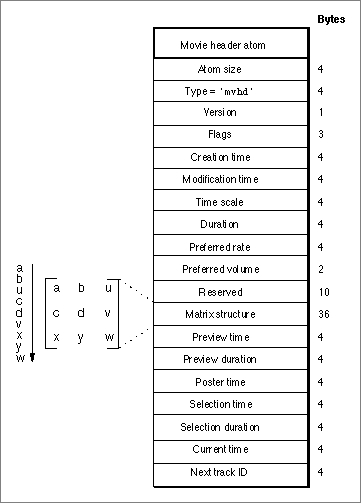

Movie Header Atoms
You can use the movie header atom to specify the characteristics of an entire movie. Figure 4-6 shows the layout of the movie header atom. The movie header atom is a leaf atom, which contains time information for the entire movie, such as time scale and duration. It also illustrates the data stream specified in the matrix structure field.Figure 4-6 The layout of a movie header atom

You define a movie header atom by specifying these elements:
- Size. A long integer that specifies the number of bytes in this movie header atom.
- Type. A long integer that specifies the format of the data in this movie header atom (defined by the atom type,
'mvhd').- Version. A 1-byte specification of the version of this movie header atom.
- Flags. Three bytes of space for future movie header flags.
- Creation time. A long integer that specifies (in seconds since midnight, January 1, 1904) when the movie atom was created.
- Modification time. A long integer that specifies (in seconds since midnight, January 1, 1904) when the movie atom was changed.
- Time scale. A time value that indicates the time scale for this movie--that is, the number of time units that pass per second in its time coordinate system. A time coordinate system that measures time in sixtieths of a second, for example, has a time scale of 60.
- Duration. A time value that indicates the duration of the movie in time scale units.
- Preferred rate. A fixed number that specifies the rate at which to play this movie.
- Preferred volume. A 16-bit fixed number that specifies how loud to play this movie's sound.
- Reserved. Ten bytes reserved for use by Apple. Set to 0.
- Matrix. The matrix structure associated with this movie. A matrix shows how to map points from one coordinate space into another coordinate space. See the chapter "Movie Toolbox" in this book for details on matrix structures.
- Preview time. The time value in the movie at which the preview begins.
- Preview duration. The duration of the movie preview in movie time scale units. For more on time, see the chapter "Movie Toolbox" in this book.
- Poster time. The time value of the time of the movie poster.
- Selection time. The time value for the start time of the current selection.
- Selection duration. The duration of the current selection in movie time scale units.
- Current time. The time value for current time position within the movie.
- Next track ID. A long integer that indicates a value to use for the track ID number of the next track added to this movie.